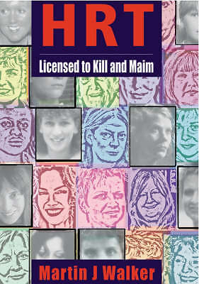

Hormones, anti-hormonaux.... victimes (endométriose, contraception, castration chimique, cancer du sein et de la prostate, puberté précose...)
Définition
Ils bloquent les récepteurs aux androgènes ou diminuant la synthèse des androgènes.
Chez l'homme, ils sont utilisés dans le traitement de certains cancers de la prostate ou lorsqu'on a recours à une castration chimique.
Chez la femme, ils sont utilisés dans les situations d'hyperandrogénie ou comme traitement de la transidentité par thérapie de remplacement d'hormone.
Certains médicaments sont utilisés comme anti-androgènes ou l'ont comme effets secondaires.
Le flutamide, le nilutamide, le bicalutamide, l'apalutamide et enzalutamide sont classés comme anti-androgènes non stéroïdiens.
Le finastéride, le dutastéride, le bexlostéride, l'izonstéride, le turostéride et l'épristéride sont des inhibiteurs de la 5-alpha réductase, empêchant la production de dihydrotestostérone à partir de la testostérone.
La spironolactone et l'acétate de cyprotérone ont des effets anti-androgènes.
Certaines molécules utilisées dans l'industrie ont des effets anti-androgènes
Médicament ayant la capacité de s'opposer à l'action des oestrogènes qui sont les hormones féminines sécrétées par les ovaires.
Les antiestrogènes comprennent Le citrate de clomifène. Cette molécule empêche les oestrogènes d'avoir une action sur l'hypothalamus qui est la région du cerveau donnant des ordres aux ovaires plus précisément demandant aux ovaires de sécréter les oestrogènes. D'autre part le citrate de clomifène favorise le déclenchement de l'ovulation. C'est pour cette raison qu'il est utilisé dans le traitement de certaine stérilité féminine. Il présente néanmoins un inconvénient : celui de la survenue de grossesse multiple. Ce médicament est utilisé essentiellement dans le traitement du cancer du sein quand il est hormonodépendant c'est-à-dire quand il est favorisé par les oestrogènes eux-mêmes
Le tamoxifène. Cette molécule empêche l'action des oestrogènes sur le sein.
Lorsque les troubles liés à la ménopause sont sévères, le traitement repose sur la prescription d'hormones sexuelles, les estrogènes et la progestérone, destinée à compenser la chute de leur taux sanguin. Ce traitement hormonal de la ménopause (THM) a été remis en cause à la suite de la publication de plusieurs études sur les effets négatifs à long terme de ces traitements.
Un progestatif est une hormone stéroïdienne d'action similaire à la progestérone, le seul progestatif naturel.
Pour être considérée comme progestative (progestogène), une molécule doit avoir les effets suivants en expérimentation chez un animal de laboratoire
Tous les progestatifs ont des propriétés antiestrogènes et antigonadotropiques (inhibition de la production d'hormones stéroïdiennes sexuelles dans les gonades).
Les progestatifs diffèrent entre eux dans leur puissance (affinité pour les récepteurs de la progestérone) et leurs effets secondaires. Ces derniers peuvent être androgènes (la médroxyprogestérone et la plupart des progestatifs C19), antiandrogènes (acétate de cyprotérone), œstrogènes, glucocorticoïdes (certains progestatifs C21) ou anti-minéralocorticoïdes (progestérone).
Lupron / Leuprolide, decapeptyl, enantone...
Vous pouvez afficher les sous-titres en français. Appuyez sur lecture, cliquez sur afficher les sous titres. Une fois les sous titres affichés (en anglais), il faut aller dans l’autre commande (a coté de sous titre), Puis, cliquer sur sous titre, Puis sur traduire automatiquement, puis en français
.
Lupron, decapeptyl, enantone...victimes
Vous pouvez afficher les sous-titres en français. Appuyez sur lecture, cliquez sur afficher les sous titres. Une fois les sous titres affichés (en anglais), il faut aller dans l’autre commande (a coté de sous titre), Puis, cliquer sur sous titre, Puis sur traduire automatiquement, puis en français.
Decapeptyl / Triptoréline, Enantone / Leuproréline, lupron / Leuproréline / agonistes des hormones libérant la gonadotrophine / Castration chimique...victimes
pour le cancer de la prostate et l’endométriose (traitement hormonal de synthèse) : Blog de l’association de victimes de tous les analogues agonistes GnRH. Le traitement hormonal du cancer localisé de la prostate n’améliore pas la survie, Enantone, Décapeptyl, Eligard, Viadur, Gonapeptyl, Zoladex, Suprefact, Lucrin, Lupron ou tout autre médicament de la classe des analogues agonistes GnRH (aussi appelés agonistes LHRH).
Les médecins sont stupéfaits d’observer qu’un homme atteint d’un cancer de la prostate avancé semble avoir été guéri, après avoir «choqué» sa tumeur cancéreuse avec de fortes doses de testostérone.
Ces enquêtes n’ont porté que sur l’Enantone. Si l’on pense au fait que les autres analogues agonistes GnRH (Décapeptyl, Synarel, Zoladex, Suprefact, Eligard, Bigoniste, Diphéréline, Lucrin, Lupron, Ginecrin, Prostap...) sont tout à fait semblables, ont le même mode d'action sur l'axe hypothalamo-hypophysaire-ovarien (ou testiculaire chez les hommes) et sur le réseau de neurotransmetteurs impliqués et ont les mêmes effet secondaires, les évaluations donnent le vertige..
Chacun de ces médicaments détraque - chez tout le monde - le système nerveux végétatif, avec des conséquences plus ou moins marquées, plus ou moins longues, sans que l'on puisse dire pourquoi certaines personnes réagissent plus fortement que d'autres. Compte tenu des fonctions du système nerveux végétatif (ou autonome), les réactions adverses peuvent intervenir n'importe où, ce qui donne un tableau tellement diversifié d'effets secondaires, que certains ont du mal à croire que tout peut venir d'un seul médicament: nodule ou maladie autoimmune de la thyroïde, urticaire, choc anaphylactique/allergique, accident vasculaire cérébral ou ischémie transitoire, embolie pulmonaire, pneumopathie, tendinites, douleurs musculaires, arthralgies ou douleurs articulaires, fractures, neuropathies et autres maladies neurologiques et neuromusculaires, troubles visuels (hémorragie de la rétine, rétrécissement du champ visuel, nerfs optiques endommagés par un oedème, etc.), troubles auditifs, maux de tête, migraines caractérisées, hypertension ou hypotension, battements du coeur ralentis ou au contraire accelérés (palpitations), infarctus, faiblesse musculaire ou au contraire raideur, spasticité, contractures (neuro)musculaires, vertiges, asthénie, fatigue chronique, dépressions, idées suicidaires ou au contraires épisodes d'euphorie et de manie, fibromyalgies, apoplexies ou hémorragies de l'hypophyse, tumeurs (adénomes) hypophysaires, mais aussi troubles hépatiques (du foie), troubles gastro-intestinaux allant des ulcères aux nausées, vomissements, constipations très fortes ou au contraire diarrhées... La liste est loin d'être exhaustive...
Les GnRHa sont une classe de médicaments appelés «analogues / agonistes des hormones libérant la gonadotrophine» (prescrits aux hommes, aux femmes et aux enfants pour diverses indications - voir «Liste AZ incomplète des« utilisations hors-étiquette » ). Il y a BEAUCOUP D'AUTRES GnRHa en dehors de Lupron - tels que Triptorelin (alias Trelstar, Décapeptyl, Gonapeptyl), Goserelin (alias Zoladex), Histrelin (alias Vantas, Supprelin), Nafarelin (alias Synarel), Buserelin (alias Suprefact, Suprecor). Notez les liens immédiatement à gauche identifiant la classification de Lupron / leuprolide comme un «médicament dangereux» (ainsi que la goséréline, Zoladex, triptoréline, Trelstar, Degarelix et Firmagon étant répertorié comme un «médicament dangereux»).
Que vous ayez reçu Lupron ou tout autre GnRHa, sachez que «les analogues de la gonadotrophine (GnRH) ne sont pas comme les autres médicaments actuellement disponibles pour le traitement de la maladie . Alors que nous continuons à en apprendre davantage sur les mécanismes d'action de ces analogues, il est de plus en plus évident qu'ils ne concernent pas seulement les hormones gonadiques, mais sont de puissants modulateurs de la fonction neuronale autonome
Le groupe pharmaceutique français Ipsen a annoncé lundi l’approbation dans 15 pays européens, dont la France et le Royaume-Uni, de son anti-cancéreux Décapeptyl dans le traitement de certains cancers du sein.
L’agence britannique du médicament (MHRA) a validé, pour le compte de ces quinze pays, l’utilisation du Décapeptyl (nom commercial de la triptoréline), en association avec d’autres molécules, pour traiter le cancer du sein “à un stade précoce chez des femmes non ménopausées” et présentant un “haut risque de récidive”,
Une étude clarifie les choses
En France, Androcur, comme le Salvacyl, dispose d'une AMM (autorisation de mise sur le marché) pour cette indication de prise en charge des délinquants sexuels. La leuproréline (laboratoires Takeda, nom commercial: Enantone) ou la triptoréline (Salvacyl injectable des laboratoires Beaufour Ipsen Pharma, substance active par ailleurs commercialisé sous le nom de Decapeptyl) dits "analogues de la GnRH", induisent une mise au repos de l'hypothalamus et ont pour effet une baisse de la sécrétion de la testostérone par les testicules.
La leuproréline est 80 fois plus puissante que l'hormone naturelle, mais elle agit de manière opposée: en utilisation chronique, elle bloque les récepteurs de la LHRH de la glande hypophysaire et, après une phase initiale de stimulation, elle désensibilise ces récepteurs.Il se produit ainsi une suppression réversible des gonadotrophines hypophysaires, suivie d'une diminution rapide des taux sanguins de testostérone, stoppant ainsi la croissance du cancer prostatique (en effet, celle-ci est habituellement stimulée par la dihydrotestostérone qui est formée à partir de la testostérone au niveau des cellules de la prostate).
J’ai eu d’autres projets pour mon avenir. Je n’avais jamais imaginé que je deviendrais invalide à partir d’un médicament pharmaceutique alors que j’avais fait confiance à mon médecin qui me l’a recommander: le poison qu’est le Lupron
Bon nombre de ces victimes souffrent des effets indésirables non seulement physiques mais les troubles de l’humeur, anxiété, dépression, psychose, agression, délire, dépression grave ainsi que les idées suicidaires. Il y a eu des suicides signalés à la FDA et un homicide, bien que les bases de données de la FDA ne contenant aucune mention de cela.
Dites non au traitement hormonal pour le cancer de la prostate !
Lupron / decapetyl : je suis castré !
Pour les hommes et les garçons, le leuprolide sert à réduire la quantité de testostérone produite par l'organisme. Le leuprolide s'utilise pour soigner un cancer de la prostate car les cellules cancéreuses ont besoin de testostérone pour croître et se reproduire. Pour les femmes et les filles, le leuprolide sert à réduire la quantité d'œstrogènes produite par l'organisme. Il s'utilise pour soigner une endométriose, car une réduction du taux d'œstrogènes aide à soulager les symptômes de cette affection.
Finastérde / propecia, proscar; dutastéride / avodart : inhibiteurs de la 5 alpha-réductase contre la chute des cheveux et l'hypertrophie bénigne de la prostate (HBP) de MERCK
Nous recueillons et diffusons de l'information auprès des victimes potentielles ou avérées, auprès de leur famille, auprès des professionnels de santé : médecins, pharmaciens, administrations et services de l’État.
La FDA annonce dans un communiqué (ICI) le changement des mentions légales des inhibiteurs de la 5 alpha reductase incluant Proscar et Avodart (finasteride et dutasteride).
Ces mentions légales avertissent désormais du risque accru qu'un cancer de la prostate de haut grade soit diagnostiqué sous ces traitements.
Effets secondaires : impuissance, baisse de la libido, dysfonction érectile, cancer de la prostate, dépression, suicide…
PROPECIAHELP effets secondaires info & forum
propecia
Parmi ceux qui souffrent de ces effets, on ne sait pas combien seront impuissants à vie
Parmi ceux qui souffrent de ces effets, on ne sait pas combien seront impuissants à vie
Un objectif secondaire est d’accroître la sensibilisation du public à l’échelle mondiale sur les PSF.
Produits dangereux, effets secondaires désastreux
– Pierre a pris Propecia durant quelques mois il y a plusieurs années et avait arrêté dès l’apparition des effets secondaires. Au-delà de l’impuissance, son sexe s’est réduit à n’être qu’« un bout de peau entre ses jambes ». Il a tout perdu, compagne, amis… Incapable de se concentrer sur une tâche et de nouer des relations sociales, ce jeune ingénieur n’attend plus désormais que la validation de son dossier d’adulte handicapé.
– Loïc perdait ses cheveux, son dermatologue lui a prescrit du finastéride. Il en constate les effets secondaires au bout de quelques semaines : très tôt, trop tard. Depuis l’arrêt du traitement ce ne sont que douleurs aux testicules et aux seins, il ne ressent plus rien à partir du ventre jusqu’à la moitié des jambes, son pénis se déforme et ne fonctionne plus. Il vit dans un état permanent de fatigue, de pertes de mémoire, le brouillard a gagné son cerveau, la dépression le gagne
– Nathan s’est vu prescrire Propecia pour la chute de ses cheveux, il a suivi le traitement sur plusieurs années. Souffrant d’une libido en berne, d’impuissance, de douleurs musculaires, d’insomnies, de pertes de mémoire, il arrête le médicament. En vain. Pire, un kyste cancéreux s’est développé dans l’un de ses testicules, son médecin confirme le lien avec la prise de finastéride. Il se fait opérer, mais ne sait s’il doit engager une chimio avec tous les risques induits pour tenter de préserver l’autre testicule. Sa vie de couple s’est terminée, la dépression s’installe.
– Steven enfin était américain, mais néanmoins membre de notre groupe Facebook. Nous n’avions plus de ses nouvelles depuis plusieurs mois, ce qui nous laissait espérer une rémission et nous réjouissait. Récemment la nouvelle est tombée : il s’est suicidé en février de cette année.
J’ai toujours cru qu’il était IMPOSSIBLE d’arrêter de dormir complètement mais j’avais tort. Le syndrome post-finastéride m’a frappé en décembre 2014. Je suis devenu instantanément impuissant mais j’ai aussi arrêté de dormir totalement pendant quatre mois. Je suis ensuite allé à l’hôpital pendant deux mois et ils ont rétabli un sommeil normal avec du remaron et de la nortriptyline tous les soirs. Mais les médicaments ont cessé de fonctionner en décembre 2016 et j’ai de nouveau cessé de dormir jusqu’au mois d’août 2017. Je suis encore allé à l’hôpital pendant cinq jours et ils ont temporairement restauré mon sommeil en ajoutant un troisième médicament (doxypine). Les médicaments ont cessé de fonctionner après deux semaines. Je n’ai pas dormi une seconde depuis lors. Je me couche et me repose mais je suis absolument positif Je ne dors pas du tout. Je ne suis pas dérangé ou fou, au cas où vous vous poseriez la question, j’étais avocat pendant 20 ans.
effets secondaires
« Il a du mal à se concentrer, à mémoriser, surtout à court terme. Il peine à lire. En fait, Gilles écoule souvent ses journées à regarder des vidéos sur internet. Impossible de travailler, voire de sortir de chez lui. Il angoisse. Il vit du RSA.
Propecia, Proscar, (finastéride) : Traitement contre la chute de cheveux
Effets secondaires de propercia : impuissance, dysfonction érectile, baisse de libido, dépression, cancer de la prostate, suicide
…
PROPECIAHELP effets secondaires info & forum
propecia
Parmi ceux qui souffrent de ces effets, on ne sait pas combien seront impuissants à vie
Parmi ceux qui souffrent de ces effets, on ne sait pas combien seront impuissants à vie
propécia (contre la chute des cheveux)
Suicide et impuissance
Suicide et impuissance
A ce jour au moins 5 hommes se sont suicidés, conséquence directe de prendre la pilule contre la perte de cheveux, le Propecia (finastéride). Sur ce site , nous vous montrerons la dévastation totale causée par cette prétendue inoffencive drogue propecia.. Vous pouvez lire des histoires de leurs proches, des vidéos et des podcasts en ligne, à partir de la plupart des familles des victimes. Le fabricant de ce médicament est Merck. C’est une compagnie pharmaceutique corrompu qui c’est démontré au fil des ans pour le commerce des vies humaines pour le gain financier !!!
Les hommes qui ont développé la persistante des effets secondaires sexuels tandis que le finasteride (Propecia), un médicament couramment utilisé pour la calvitie, ont une forte prévalence de la dépression et les pensées suicidaires, selon une nouvelle étude de chercheurs de l’Université George Washington.
inhibiteur de la 5-alpha-réductase (enzyme permettant la conversion de la testostérone en dihydrotestostérone), actuellement utilisé dans le traitement des manifestations de l’hypertrophie de la prostate, réduirait en traitement préventif le risque de cancer de la prostate.
Le finastéride est un inhibiteur de la 5-a-réductase, notamment de type 2, présente au niveau du tractus urogénital mâle. En inhibant sélectivement la transformation de la testostérone en dihydrotestostérone, il laisse intact l’effet de la testostérone sur la force musculaire et la libido, et réduit celui de la dihydrotestostérone dont il inhibe la synthèse.
La pilule contraceptive
liée à la dépression Les chercheurs ont découvert que les femmes qui prenaient le contraceptif oral combiné avaient 23% plus de chances d'être diagnostiquées avec une dépression et celles qui prenaient des pilules à progestatif seul (également appelées «la mini-pilule») étaient 34% plus susceptibles. Les adolescents étaient les plus à risque de dépression, avec une augmentation de 80% en prenant la pilule combinée, et ce risque est double avec la pilule progestative seule. En outre, d'autres méthodes hormonales couramment proposées aux femmes qui cherchent une alternative à la pilule - comme le SIU / spirale hormonale, le timbre et l'anneau - augmentent la dépression à un taux beaucoup plus élevé que celui des contraceptifs oraux.
Dans les années 1960, les effets secondaires graves de la pilule, tels que les caillots de sang et les crises cardiaques, ont commencé à faire de la publicité. Le fabricant de comprimés, GD Searle, a reçu des rapports faisant état de 132 caillots sanguins, dont 11 mortels. 3 Le fabricant a nié que ces décès aient été causés par la pilule, bien qu'il existe des preuves attestant que la pilule augmente considérablement le risque de formation de caillots sanguins et d'accidents vasculaires cérébraux, de crises cardiaques, d'embolies pulmonaires et de thromboses veineuses profondes. Une étude publiée dans le New England Journal of Medicine a montré:
Une étude de 2015 publiée dans le British Journal of Clinical Pharmacology montre que la prise d'une combinaison de progestatif et d'œstrogènes augmente le risque de cancer primitif du cerveau (gliome) de 50%. L'utilisation à long terme double presque le risque. Les femmes ne recevant que du progestatif présentent un risque de cancer du cerveau encore plus élevé. Et bien que les gliomes représentent 33% des tumeurs primitives du cerveau, lorsque Time.com a rendu compte de la découverte, l'auteur a utilisé le mot «rare» cinq fois pour décrire les tumeurs.
La pilule contraceptive et d'autres produits de contrôle des naissances peuvent et ont tué des femmes non seulement aux États-Unis, mais dans le monde entier. Souvent, la pilule entraîne des problèmes cardiovasculaires pouvant entraîner la mort. Des études ont montré que la plupart des femmes décédées des suites d’une utilisation de la pilule ou d’autres produits de contrôle des naissances étaient mortes de caillots de sang, de crises cardiaques ou d’embolies pulmonaires. Comme vous pouvez le constater sur notre lien effets secondaires, la pilule provoque également de nombreux autres problèmes graves tels que le cancer, les maladies inflammatoires pelviennes, la dépression et bien plus encore.
La cyprotérone est un stéroïde antiandrogène et antigonadotrope de synthèse, commercialisé en France sous forme acétylée2, soit seul sous le nom d'Androcur, soit combiné à l'éthinylestradiol sous les noms de Diane-35
APRIL a fait campagne pour améliorer les mises en garde sur les notices d'information des patients fournies aux utilisateurs de ce médicament et que les médecins devraient être avertis d'être attentifs à la dépression induite par Dianette. Nous savons par les femmes qui nous contactent que le médicament est trop prescrit et depuis trop longtemps sans avertissements du risque de thrombose et d'effets secondaires psychiatriques. Dans de nombreux cas, des antidépresseurs ont été prescrits à des femmes sans être prévenu. Dianette peut être la cause de leur humeur basse ou d'autres changements psychiatriques.
« J’ai un peu le sentiment d’être passée à côté de mon éveil à la sexualité, à la venue de la féminité dont tous les magazines parlent mais que je n’ai pas vécue. C’est comme si j’avais subi une castration chimique inconsciente. »
En 1975, il y avait 7.000 cas de nouveaux cancers du sein par an en France.En 2013, il y en avait 60.000, et chez des femmes de plus en plus jeunes à cause de la pilule… Cancers, AVC, thrombo-embolies, dépressions, perte de libido, autisme chez les enfants… de nombreux effets secondaires graves et plusieurs maladies sont impliquées.
Pilule et dépression : Je passe ainsi le pire printemps de ma vie. Ce qui se manifestait comme une déprime se transforme en vraie dépression avec la prise de la pilule : je suis toujours en larmes, sur la défensive, je retrouve de vieilles angoisses que j’avais réglées depuis une dizaine d’années.
« En arrêtant la pilule, j’ai découvert que j’étais une femme désirante, ma libido a été délirante »
45% des femmes prenaient la pilule en 2010. Six ans plus tard, elles n’étaient plus que 36,5%. Ce baromètre, publié ce 25 septembre par l’agence sanitaire Santé publique France, l’atteste : les femmes désavouent de plus en plus ce contraceptif. Directrice artistique à Paris, mère de deux enfants, Louise a délaissé la pilule, qu’elle accuse d’avoir tué sa libido, au profit du stérilet. Et, à 35 ans, elle s’est découvert un désir qu’elle ne soupçonnait pas.
La pilule est-elle dangereuse pour la santé, pour l’environnement ? Quelle est son histoire ? Existe-t-il des alternatives sans hormones aussi efficaces ?
Le bisphénol A a été interdit dans certains produits. Or, vous expliquez que l’EE2 est 1000 fois plus puissant que ce dernier.
En 1975, on découvrait 7 000 cas de nouveaux cancers du sein par an en France. En 2013, on approche des 60 000 cas, et chez des femmes de plus en plus jeunes… Cancers, AVC, thrombo-embolies, dépressions, perte de libido, autisme chez les enfants… de nombreux effets secondaires graves et plusieurs maladies sont impliquées.
Entre 2000 et 2011, l’ANSM reconnaît officiellement 1751 cas par an d’accidents thromboemboliques veineux dont 14 décès annuels pour les pilules de 3ème et 4ème génération et 778 accidents par an dont 6 décès annuels pour les pilules de 1ère et 2ème génération. Mais ces chiffres excluent :…
les contraceptifs oestro-progestatifs sont des cancérogènes du groupe 1 – c’est à dire avec le niveau de preuve le plus important
La pilule augmente le risque de cancer du sein, de l’utérus et du foie, car la prise est répétée pendant des mois, voire des années
Pourtant, alors que Bayer paie d'énormes dédommagements, la compagnie dit que ses produits contraceptifs sont recommandables .
« Le plus important perturbateur endocrinien c’est la pilule »
Traitements hormonaux et cancer du sein / la pilule est classée hautement cancerigène !
Les dangers du stérilet hormonal Mirena / Bayer
groupe facebook
Sous stérilet hormonal, certaines femmes ressentent des symptômes dépressifs. Et quand elles le disent ? On ne les prend souvent pas au sérieux.
C'est peut-être le début d'un scandale sanitaire mondial, avec des milliers de plaintes en Espagne, aux Etats-Unis, contre les effets secondaires délétères du stérilet hormonal Mirena. En France, des témoignages arrivent par centaines chaque jour sur Internet, alors que l'Agence nationale de sécurité du médicament et des produits de santé commence à reconnaître les effets secondaires du contraceptif des laboratoires Bayer.
Deux jours plus tard Marianne est envahie d'idées suicidaires!!!! Visite à l'urgence, psychiatrie, etc. On lui répond: «Consultez un psy et ça ira». Le lendemain matin ça ne va vraiment pas mieux, elle passe donc quelques jours au centre de crise, trouve une merveilleuse psy, fait tout ce qu'il faut, mange bien, fait de l'exercice, prend soin d'elle, mais ça ne va pas mieux. Un mois plus tard sa psy la trouve trop dépressive pour poursuivre. Un autre petit séjour à l'urgence psychiatrique, revoit son médecin, on augmente la dose des antidépresseurs. Elle va bien pour quelques jours, tout le monde reprend espoir, et hop ça retombe.
Le stérilet à la progestérone libère un progestatif, le Levonorgestrel, de manière continue qui diminue en plus l'abondance et les douleurs des règles.
Le stérilet à la progestérone présente les avantages du stérilet classique au cuivre et ceux d'une contraception progestative.
Négationnisme : le médecin a répondu qu'il n'y avait pas de lien
Témoignage et négationnisme du médecin
Tamoxifène / Anti-œstrogènes (Le tamoxifène est transformé en 4-hydroxytamoxifène par le cytochrome p450 de type CYP2D6) contre le cancer du sein
tamoxifène favoriserait le cancer du sein
le tamoxifène qui multiplierait de deux à sept fois la fréquence du cancer de l’endomètre, muqueuse qui tapisse l’utérus
risque accru de cancer de l'utérus incidence et de mortalité.
Environ un millier d’études publiées traitent le tamoxifène et le cancer de l’endomètre. Une analyse de plusieurs études à grande échelle montre que le tamoxifène double le risque d’une femme pour le cancer de l’utérus en cas d’utilisation d’un à deux ans, et il quadruple dans les cinq ans. La plupart des gens ne savent pas que le tamoxifène était initialement considéré comme une pilule contraceptive, car il interfère avec la capacité de l’utérus à maintenir une grossesse !
En avril 1996, l’Organisation Mondiale de la Santé a déclaré le tamoxifène comme étant un cancérigène connu, mais AstraZeneca continue à commercialiser ce médicament toxique. Le 16 Mai 2000, le New York Times a rapporté que l’Institut national des sciences de la santé environnementale des substances l’a énuméré comme cancérogènes connu. Le tamoxifène a donc été inclus dans cette liste ! Prendre une substance cancérigène pour arrêter la propagation du cancer, c’est comme jouer « à la roulette russe » avec un pistolet en pleine charge ! La revue Science a publié une étude de la Duke University Medical Center en 1999 montrant qu’au bout de deux à cinq ans, le tamoxifène a initié la croissance du cancer du sein !
Dans un article publié en 1994, Betty Martini a écrit «Le tamoxifène a été testé et re-testé depuis plus de 15 ans. Les testeurs ont admis la fraude, de nombreuses contre-indications ont été tout simplement ignorées, des résultats d’essai ont été limités dans le temps et les séquelles non comptabilisées, bien que les femmes tombèrent malades et certaines d’entre-elles en sont mortes. Les essais ne prouvent pas la que la substance fonctionne, donc ils en font plus encore, avec votre argent. Ils vont poursuivre les tests jusqu’à ce qu’ils puissent trouver un moyen de truquer les résultats en faveur des femmes en bonne santé, afin qu’elles achètent du poison pour une maladie qu’elles n’ont pas, mais le médicament le leur donnera ! «
Le tamoxifène peut être un danger pour le cerveau
Nous nous sommes appérçu que le tamoxifène provoquait le cancer de l'utérus
Le danger des hormones de synthèse
C’est en 2002 que l’on a publié une étude (Million Women Study) portant sur un million de femmes britanniques âgées de 50 à 64 ans entre 1996 et 2001. Celles-ci ont donné des informations sur le type de traitement hormonal de substitution (THS) qu’elles utilisaient et ont été suivies afin d’évaluer leur mortalité et l’incidence du cancer. Les auteurs de l’étude en concluent qu’au cours des dix dernières années l’usage du traitement hormonal de la ménopause par ces femmes a pu entraîner 20 000 cancers du sein. Ils révèlent également que l’augmentation du risque de cancer du sein est la même quel que soit le mode d’administration du traitement, comprimés ou voie non orale (gel ou patch, largement utilisés en France). Ils recommandent aux femmes actuellement sous traitement hormonal d’arrêter dès que possible. En effet les risques de cancer du sein diminuent à l’arrêt du traitement ; cinq ans après l’arrêt, les risques supplémentaires sont nuls.Sachant tout cela, comment peut-on encore oser prescrire des hormones de synthèse à nos patientes ménopausées ?
En France, les progestatifs oraux, des hormones de synthèse, de structure chimique proche de la progestérone secrétée par les ovaires, sont couramment prescrits depuis les années 1980. Les progestatifs sont commercialisés sous plusieurs noms : Orgamétril, Lutéran, Duphaston, Surgestone, Lutényl...
Ils sont prescrit pour la contraception (27 % des prescriptions ), pour des douleurs mammaires (47 % des prescriptions), pour des pathologies de l’endomètre (29 % des prescriptions), pour des troubles liés à la périménopause (57 % des prescriptions), pour des maladies bénignes du sein (20 % des prescriptions) ou encore pour des syndromes prémenstruels (38 %). Cependant, les données disponibles sont rares concernant l’influence sur le risque de cancer du sein de l’utilisation de progestatifs seuls avant la ménopause."
Différentes études avaient déjà démontré que l’association œstrogènes et progestatifs de synthèse, dans le cadre d’un traitement hormonal substitutif (THS), augmentait le risque de cancer du sein chez les femmes ménopausées. Mais, la question de l’influence de l’utilisation, avant la ménopause, des progestatifs seuls (non associés avec des œstrogènes) sur le risque de cancer du sein restait encore en suspens.
L’équipe de Françoise Clavel-Chapelon, Directrice de recherche à l’Inserm (Institut Gustave Roussy), vient d’apporter un premier élément de réponse grâce à une étude publiée dans le British Journal of Cancer. Les résultats révèlent que les femmes qui ont utilisé pendant plus de 4 ans et demi un progestatif oral seul avant la ménopause voient leur risque de cancer du sein augmenté pendant la durée du traitement, le risque s’estompant à l’arrêt de celui-ci.
L'étude incluait 73 664 femmes. L’analyse montre une augmentation du risque de cancer du sein de 44% (1.44 fois plus de risque) chez les femmes en cours d'utilisation de progestatifs oraux depuis plus de 4 ans et demi, après l’âge de 40 ans et avant la ménopause. L’augmentation du risque du cancer du sein n’est plus apparente après l’arrêt des progestatifs, quelle que soit la durée du traitement.
Ces résultats, considèrent les chercheurs, nécessitent d’être approfondis et corroborés par d’autres études épidémiologiques à large échelle.Cette recherche s'inscrit dans le cadre de la partie française de EPIC, vaste étude européenne coordonnée par le Centre International de Recherches sur le Cancer portant sur 500 000 européens dans 10 pays.
Pertubateurs endocriniens
Tous les perturbateurs endocriniens peuvent dégrader la libido et la performance sexuelle
Plus de 500 polluants et produits chimiques présents dans notre environnement ont un effet perturbateur sur le système endocrinien
la pilule contraceptive, oestroprogestative, est un perturbateur endocrinien, au même titre que le bisphénol A, le glyphosate, et bien des substances chimiques qui se trouvent dans notre environnement. Vous allez choquer les femmes, qui font attention à se démaquiller avec des produits bio, mais avalent leur pilule chaque jour sans se poser la moindre question
Les perturbateurs endocriniens ont été révélés aux yeux du grand public au début des années 90 lorsque plusieurs études ont permis d’établir que la concentration spermatique avait décliné au cours des 50 dernières années (Carlsen, 1992). Or, la probabilité d’avoir un enfant est divisée par deux en dessous de 20 millions de spermatozoïdes par millilitre. Une baisse continue de cette concentration peut donc à terme, poser des problèmes de reproduction pour l’espèce humaine.
Premarin | Traitement hormonal substitutif | THS | œstrogènes conjugués, est cancerogène
Le prémarin est cancerogène (extrait de la mafia pharmaceutique et alimentaire)
"bien que parfais les médecins décrivent le prémarin comme un produit naturel pour les femmes, il n'est rien d'autrequ'un oestrogène de cheval."
"d'après Good médicine, le risque accru de cancer de l'utérus et du sein est un facteur réel selon que la progestérone (elle même déjà très dangereuse) est ou non rajoutée à ces médicaments. Il est prouvé cliniquement que les femmes qui font usage des oestrgènes ont plus de probabilité (de 30% à 80% par rapport à d'autre femmes) d'avoir le cancfer du sein."
Androcur / Acétate de cyprotérone de BAYER : progestatif / bloqueur de testostérone / anti-androgène
La cyprotérone est un stéroïde antiandrogène et antigonadotrope de synthèse, commercialisé en France sous forme acétylée2, soit seul sous le nom d'Androcur, soit combiné à l'éthinylestradiol sous les noms de Diane-35
C’est une alerte doublée d’une équation sans solution. L’affaire est parfaitement exposée sur le site de l’Agence nationale de sécuriré du médicament (ANSM).
l’Androcur® présent sur le marché français depuis près de quarante ans (également commercialisé sous le nom générique d’acétate de cyprotérone). Ce médicament est un dérivé de la progestérone ayant des propriétés anti-androgéniques
Après le Mediator, les pilules de troisième génération, la Dépakine ou les implants contraceptifs, combien de crises sanitaires à venir ? Un rapport de 96 pages, remis ce 3 septembre à Agnès Buzyn et commandé après l'affaire du Levothyrox, pointe "l'absence d'anticipation" des autorités et le manque d'accompagnement des patients.
Une première alerte dès 2008
Un risque multiplié par vingt
Marlène Vault a pris durant 12 années de l'Androcur, un médicament hormonal dérivé de la progestérone. Ce traitement est à l'origine de son méningiome, tumeur cérébrale qui peut occasionner..
De nombreuses patientes atteintes de méningiome après la prise de ce traitement se sont manifestées ces derniers jours.
BFMTV
selon une nouvelle étude réalisée par l'Agence de sécurité du médicament (ANSM) et l'Assurance maladie, sur la durée, l'Androcur, prescrit en 2017 à 89.000 femmes en France, peut augmenter fortement le risque de tumeur au cerveau et en particulier de méningiome. Sur 25.000 femmes, l'étude a établi que pour une prise d'au moins trois grammes étalée sur plus de six mois, le risque de tumeur était multiplié par sept. Après cinq années de traitement, ce chiffre grimpe à 20, selon le rapport.
ce médicament est dérivé de la progestérone dont l’action antihormonale s’oppose à l’action des hormones androgènes, comme la testostérone.
Malgré de tels effets déjà connus, on découvre aujourd’hui que des médecins prescrivent hors AMM ; la question de la justification de telles prescriptions est posée devant de de telles libertés.
ET quand bien même, les patients seraient demandeurs, le prescripteur reste le médecin, un professionnel sachant et responsable de ses décisions.
ET quand bien même, les patients seraient demandeurs, le prescripteur reste le médecin, un professionnel sachant et responsable de ses décisions.
L’Androcur® est un antiandrogène contenant un dérivé de progestérone. Chez l’homme, il est préconisé pour ralentir le développement des cellules cancéreuses de la prostate. Chez la femme, son utilisation permet de solutionner certains troubles de la pilosité et des excès de sébum. Il est proposé en comprimé sécable.
C'est un médicament qui augmente les risques de tumeur. Il s?appelle l?androcur et une récente étude révèle qu'il augmente significativement les méningiomes, des tumeurs non cancéreuses. L?androcur est un traitement hormonal normalement prescrit pour des cas d'hirsutisme mais aussi comme simple anti acnéique ou contraceptif. Une récente étude prouve que pris sur la durée, l?androcur augmente jusqu'à 20 fois les risques de tumeur. Selon la ministre de la Santé, Agnès Buzyn, il n'y a pas d?inquiétude à avoir. Mais les victimes sont-elles vent debout contre la ministre. Elles l?accusent de minimiser les séquelles dues au médicament.
Les traitements hormonaux substitutifs (THS) provoquent les cancers du seins et des ovaires
Traitement Hormonal Substitutif (THS), risque de démence et troubles des fonctions cognitives
Les nouvelles données mettent en évidence une augmentation du risque de démence qui se traduirait par un nombre supplémentaire de 23 cas pour 10 000 femmes traitées avec cette association oestro-progestative pendant un an par rapport à 10 000 femmes non traitées.
THS : autorisé à tuer et mutiler

Il est maintenant apparemment accepté par toutes les compagnies pharmaceutiques qu’oestrogènes pris sur de longues périodes peuvent déclencher des cancer de l’endomètre, cancer du sein et la maladie de la vésicule biliaire, crises cardiaques, accidents vasculaires cérébraux, thrombose veineuse profonde et pancréatite. Les déséquilibres de niveau inférieur peuvent provoquer, parmi beaucoup de choses, sensibilité des seins, perte de cheveux, rétention d’eau, gain de poids, la sensation de brûlure des saignements cutanés et irréguliers. Progestatif peut provoquer la sensibilité des seins, distension, oedème, crampes abdominales et pre-menstrual-comme le syndrome, ainsi que l’anxiété, irritabilité, dépression et la somnolence.
Hormone de croissance
Le procès-fleuve de l'hormone de croissance s'ouvre mercredi. Dans les années 70, des centaines d'enfants ont été traités aux hormones de croissances contaminées, dont 111 sont morts. Parmi les victimes, Eric Goerrian, un jeune homme de 24 ans. Sa mère n'a jamais lâché et attend avec impatience que soit jugé ce scandale sanitaire qui rappelle celui du sang contaminé.
Démence et bloqueurs de testostérone
Le traitement du cancer de la prostate peut doubler le risque de maladie d'Alzheimer
Une analyse à grande échelle des dossiers médicaux a indiqué que les hommes subissant la thérapie de privation d'androgène pour le traitement de cancer de la prostate peuvent être presque deux fois le risque de développer par la suite la maladie d'Alzheimer, et que la probabilité accrue de la maladie est proportionnelle à la durée d'ADT.
La maladie d'Alzheimer peut constituer un risque pour les patients âgés atteints de cancer de la prostate et recevant un traitement bloquant les hormones, selon une vaste analyse financée par le gouvernement américain.
Les hormones féminines peuvent vous tuer
Torturées par leurs médecins, avec des médicaments, des millions de personnes, chaque année, en meurent, sont handicapées ou sont poussées au suicide par d'atroces souffrances


Ajouter un commentaire
 Français
Français
 English
English
 Español
Español
 Italiano
Italiano
 Deutsch
Deutsch
 Nederlands
Nederlands
 Portuguesa
Portuguesa